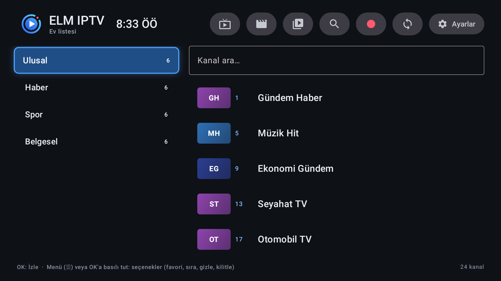
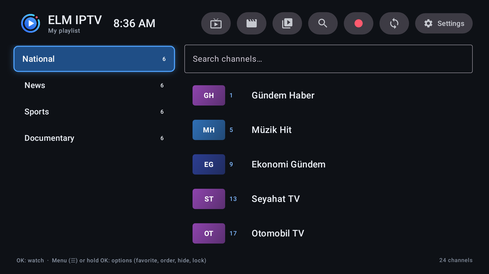
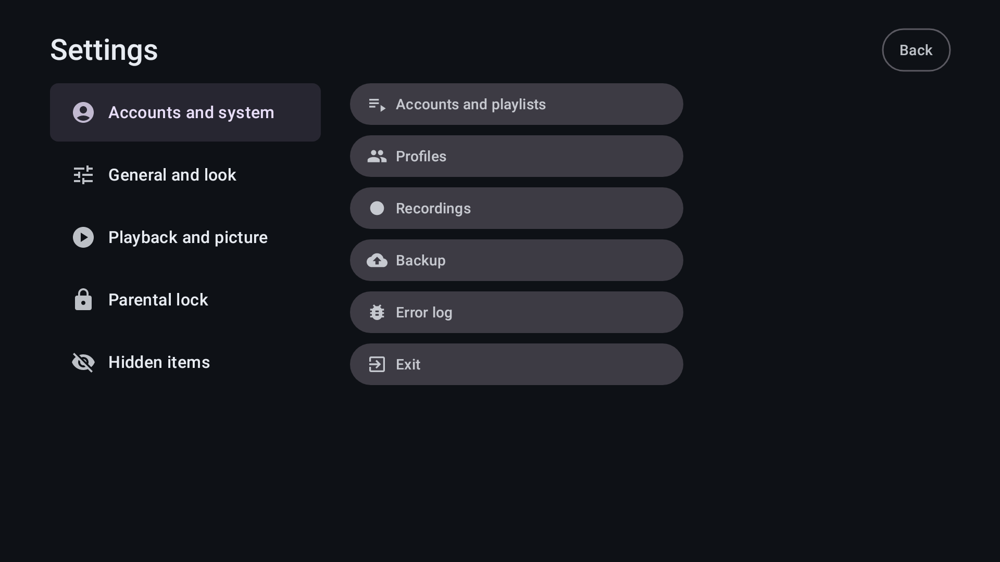
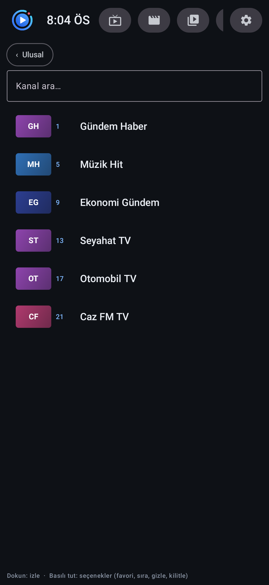
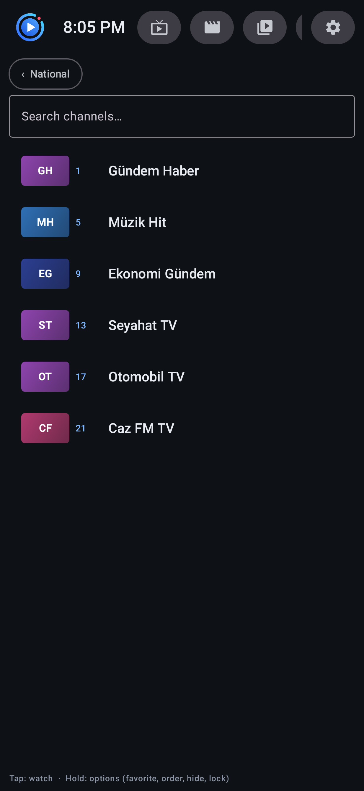

Uygulama da güncellemeleri de ücretsiz. Kart bilgisi sorulmaz.The app and every update. Nobody asks for your card.
Fire TV · Android TV · Google TV · Telefon · TabletFire TV · Android TV · Google TV · Phone · Tablet
IPTV oynatıcıya para vermeyin.Don't pay for an IPTV player.
ELM IPTV'nin bütün özellikleri ilk açılıştan itibaren sizin. Yıllık lisans, cihaz aktivasyonu, deneme süresi ya da reklam yok. IPTV sağlayıcınızın bilgilerini girin, gerisini kumandayla halledin. Every feature in ELM IPTV is yours from the first launch. No yearly licence, no device activation, no trial period, no ads. Enter your IPTV provider's details and do the rest with the remote.


0 ₺Free
Abonelik yokNo subscription
Her yıl yenilenen lisans yok, cihaz başına aktivasyon kodu yok.No licence to renew every year, no activation code per device.
Reklam yokNo ads
Ne açılışta ne kanal değiştirirken. Ne izlediğiniz de kaydedilmez.Not at start-up, not between channels. What you watch isn't tracked either.
Başka yerde parayla açılan özelliklerThe features others charge for
Kayıt, çoklu ekran, arşiv, profiller. Çoğu oynatıcı bunları ücretli sürüme ayırır; ELM IPTV'de hepsi baştan açık. Her ekran kumandanın yön tuşlarıyla ve OK ile kullanılmak üzere yapıldı, fare aramazsınız.Recording, multi-view, catch-up, profiles. Most players keep these for the paid tier; in ELM IPTV they're all there from the start. Every screen is made for the arrow keys and OK, so you never miss a mouse.
Gezinirken önizlemePreview while you browse
Listede üzerine geldiğiniz kanal köşede oynamaya başlar. OK'a basınca tam ekrana geçer; ekran kararmaz, yayın baştan yüklenmez.The channel you land on starts playing in a small window. Press OK and it goes full screen, with no black screen and no reload.
Rehber ve arşivGuide and catch-up
Bütün kanalların yayın akışı aynı rehberde. Kaçırdığınız programı arşivden açın, bekleyeceğiniz maça hatırlatıcı kurun.Every channel's schedule in one guide. Open a show you missed from catch-up, or set a reminder for the match you're waiting for.
Program ve dizi kaydıRecord shows and series
Tek bir programı ya da bütün diziyi kaydedin. Dizi kaydı, rehbere yeni bölüm düştükçe kaydı kendisi planlar.Record a single show or a whole series. Series recording schedules each new episode as soon as it shows up in the guide.
Canlı yayını durdurunPause live TV
Kapı çaldıysa durdurun, golü kaçırdıysanız 10'ar saniye geri sarın. Arşivi olan kanalda programı baştan başlatabilirsiniz.Doorbell? Pause it. Missed the goal? Skip back 10 seconds at a time. On channels with catch-up you can restart the show.
Profiller, çocuk profiliProfiles and a kids profile
Evdeki herkesin favorileri ve kaldığı yer ayrı. Çocuk profili yalnızca sizin seçtiğiniz kategorileri görür, çıkmak için PIN gerekir.Everyone at home keeps their own favourites and resume points. The kids profile sees only the categories you choose, and leaving it needs a PIN.
Dört kanal birdenFour channels at once
Aynı akşam oynanan maçları yan yana izleyin. Sesin hangi pencereden geleceğini siz seçersiniz.Watch the evening's matches side by side, and choose which window the sound comes from.
Telefondan TV'ye yedekBackups from your phone
Listeler, favoriler ve ayarlar parolalı bir dosyaya yedeklenir. Telefondan TV'ye gönderin; yeni cihaza geçmek birkaç dakika sürer.Playlists, favourites and settings go into a password-protected file. Send it from your phone to the TV, and moving to a new device takes minutes.
Güncellemeyi kendisi bulurFinds its own updates
Yeni sürüm çıkınca uygulama size sorar, dosyanın imzasını doğrulayıp kurar. Mağaza gerekmez, siteye tekrar gelmeniz gerekmez.When a new version is out the app asks you, checks the file's signature and installs it. No store, and no need to come back here.


Birkaç gün kullanınca fark edeceklerinizWhat you notice after a few days
- "cocuk" yazın, "ÇOCUK" çıksın. Arama Türkçe harflere takılmaz; kanalda, filmde, dizide ve rehberde aynı şekilde çalışır.Search that ignores accents and case, in channels, movies, series and the guide alike.
- Saatlerce açık kalsa da yorulmaz. Canlı yayın arabelleğinin bir üst sınırı var, cihazın belleği dolmaz.Leave it on all day. The live buffer has a hard limit, so the device's memory never fills up.
- İnternet gidip gelirse yayın kendiliğinden döner. Görüntü donarsa oynatıcı kendini toparlar.When the internet drops, the stream comes back by itself. If the picture freezes, the player recovers.
- On binlerce kanallık liste sorun değil. Liste parça parça okunur, eski cihazlar da rahatça kaldırır.Playlists with tens of thousands of entries are fine. They're read in chunks, so older devices cope too.
- AC3, E-AC3, DTS ve MP2 sesli yayınlar çalar. Cihaz çözemezse yazılım çözücü devreye girer.AC3, E-AC3, DTS and MP2 audio plays. If the device can't decode it, a software decoder takes over.
- Film 24, maç 50 karede. Televizyonun yenileme hızı yayına göre ayarlanır, kayan görüntüde takılma azalır.Films at 24, football at 50. The TV's refresh rate follows the stream, so panning shots stutter less.
- Aynı hesapla başka cihaz izliyorsa inatlaşmaz. Sağlayıcı bağlantıyı kesince birkaç denemeden sonra durur ve nedenini ekrana yazar.It doesn't fight other devices on your account. If the provider keeps cutting the stream, it stops after a few tries and tells you why.
- Uzaktan da okunur. Türkçe ve İngilizce arayüz, dört kademe yazı boyutu.Readable from the sofa. Turkish and English interface, four text sizes.
Telefonda ve tablette de aynı uygulamaThe same app on phones and tablets
Ayrı bir sürüm yok. Aynı APK, Android 6 ve üzeri telefonlarda ve tabletlerde dokunmayla çalışır.There's no separate version. The same APK runs by touch on phones and tablets with Android 6 or later.
- Dokunun, izleyin. Basılı tutunca favoriye ekleme, sıralama, gizleme ve kilitleme seçenekleri açılır.Tap to watch. Hold for favourite, reorder, hide and lock.
- Oynatıcıda kaydırın. Yukarı ve aşağı kanal değiştirir, sola ve sağa sarar; çift dokunuş menüyü açar.Swipe in the player. Up and down change the channel, left and right seek, and a double tap opens the menu.
- Dar ekranda tek sütun: önce kategoriler, dokununca kanallar. Tablette TV'deki gibi iki sütun.One column on a narrow screen: categories first, then channels. Tablets get the two-column TV layout.
- Dikey de olur, yatay da.Portrait or landscape, whichever way you hold it.


Kurulum birkaç dakikaInstalling takes a few minutes
ELM IPTV uygulama mağazasında yok, APK olarak kuruluyor. Bunu bir kez yaparsınız; sonraki güncellemeler uygulamanın içinden gelir.ELM IPTV isn't in an app store; you install it as an APK. You only do this once, and later updates come from inside the app.
Downloader'ı yükleyinGet Downloader
Fire TV'nin aramasına "Downloader" yazın ve uygulamayı yükleyin.Search for "Downloader" on your Fire TV and install it.
Kuruluma izin verinAllow installs
Ayarlar → My Fire TV → Geliştirici seçenekleri → Bilinmeyen uygulamaları yükle → Downloader: Açık. Geliştirici seçeneklerini göremiyorsanız My Fire TV → Hakkında'da cihaz adına 7 kez basın.Settings → My Fire TV → Developer options → Install unknown apps → Downloader: On. If you can't see Developer options, press the device name 7 times under My Fire TV → About.
Adresi yazınEnter the address
Downloader'a bu adresi yazın, indirme bitince "Yükle"yi seçin:Type this address into Downloader and choose "Install" when the download finishes: @SITE@/ELM-IPTV-@VERSION@.apk
Android TV ve Google TV: yol aynı. APK'yı Downloader'la ya da bir dosya yöneticisiyle açın, kurulum iznini verin.Android TV and Google TV: the same steps. Open the APK with Downloader or a file manager and allow the install.
Telefon ve tablet: bu sayfayı telefonda açıp "Ücretsiz indir"e dokunun, inen dosyayı açın ve tarayıcınızın uygulama yüklemesine izin verin.Phones and tablets: open this page on the phone, tap "Download free", open the file and let your browser install apps.
SorularQuestions
Ücretsizse bunun bir bedeli yok mu?If it's free, what's the catch?
Yok. ELM IPTV'yi tek bir geliştirici yazıyor ve kaynak kodu GPL-3.0 lisansıyla herkese açık. Satılacak bir premium sürüm de, satılacak kullanıcı verisi de yok. Uygulamayı beğenirseniz GitHub Sponsors üzerinden destek olabilirsiniz; olmasanız da hiçbir özellik kapanmaz.There isn't one. ELM IPTV is written by a single developer and its source code is open under the GPL-3.0. There's no premium version to sell and no user data to sell. If you like the app you can support it through GitHub Sponsors; if you don't, nothing gets switched off.
Kanal ya da içerik veriyor mu?Does it come with channels?
Hayır. ELM IPTV yalnızca bir oynatıcı; içerik sağlamaz, satmaz. IPTV sağlayıcınızdan aldığınız Xtream Codes bilgilerini ya da M3U bağlantısını girersiniz.No. ELM IPTV is only a player; it doesn't provide or sell content. You enter the Xtream Codes details or M3U link you get from your IPTV provider.
Hangi cihazlarda çalışır?Which devices does it run on?
Fire OS 6, 7 ve 8 kullanan Fire TV'lerde (Fire OS 6 ve 8 gerçek cihazda denendi), Android 6 ve üzeri Android TV ve Google TV cihazlarında, Android telefon ve tabletlerde. Vega OS kullanan yeni Fire TV'lerde (Fire TV Stick 4K Select ve sonrası) çalışmaz, çünkü bu cihazlara mağaza dışından uygulama kurulamıyor. Sizinkinin hangisi olduğunu Ayarlar → My Fire TV → Hakkında'da görebilirsiniz.Fire TVs with Fire OS 6, 7 and 8 (tested on real Fire OS 6 and 8 devices), Android TV and Google TV devices with Android 6 or later, and Android phones and tablets. It doesn't run on newer Fire TVs with Vega OS (Fire TV Stick 4K Select and later), because they don't allow apps from outside the store. Settings → My Fire TV → About shows which one you have.
Bilgisayarda çalışır mı?Does it run on a computer?
Evet. Windows 10/11 ve 64 bit Linux sürümleri GitHub sürüm sayfasında (.msi ve .AppImage). Bilgisayarda VLC 3 kurulu olmalı.Yes. Windows 10/11 and 64-bit Linux versions are on the GitHub releases page (.msi and .AppImage). VLC 3 needs to be installed.
Aynı hesabı birden çok cihazda kullanabilir miyim?Can I use one account on several devices?
Bu, sağlayıcınızın kaç bağlantıya izin verdiğine bağlı. Sınır dolunca sağlayıcı yayını keser. ELM IPTV o zaman diğer cihazı düşürmeye uğraşmaz; birkaç denemeden sonra durur ve nedenini ekrana yazar. Kanalı yeniden seçerseniz bir kez daha dener.That depends on how many connections your provider allows. When the limit is reached the provider cuts the stream. ELM IPTV then doesn't try to push the other device off; it stops after a few tries and tells you why. Pick the channel again and it tries once more.
Hesap bilgilerim nereye gidiyor?Where do my account details go?
Yalnızca cihazınızda durur ve yalnızca sağlayıcınızın sunucusuna gönderilir. Uygulamada reklam, analitik ya da kullanım takibi yok; hata kayıtları da cihazdan çıkmaz.They stay on your device and go only to your provider's server. The app has no ads, analytics or usage tracking, and error logs never leave the device.
Güncellemeleri nasıl alırım?How do I get updates?
Uygulama günde bir kez yeni sürüme bakar ve varsa size sorar. Ayarlar → Hesaplar ve sistem → Güncelleme'den elle de bakabilirsiniz.The app checks once a day and asks you when there's a new version. You can also check yourself under Settings → Accounts and system → Update.
Yalnızca izlemeye hakkınız olan içerikleri izleyin. Telif hakkıyla korunan yayınlara izinsiz erişmek yasalara aykırıdır; ELM IPTV böyle bir kullanımı desteklemez.Only watch content you have the right to watch. Accessing copyrighted broadcasts without permission is illegal, and ELM IPTV doesn't support such use.
Kumandayı alın, deneyin.Grab the remote and try it.
Hesap açmanız, kart girmeniz, deneme süresinin bitmesini beklemeniz gerekmez.No account to create, no card to enter, no trial to run out.
ELM IPTV işinize yaradıysa, geliştiricisine destek olmayı seçebilirsiniz. Tamamen size kalmış: destek olan da olmayan da aynı uygulamayı kullanır.If ELM IPTV is useful to you, you can choose to support its developer. It's entirely up to you: everyone gets the same app either way. GitHub Sponsors'ta destek olSupport on GitHub Sponsors →